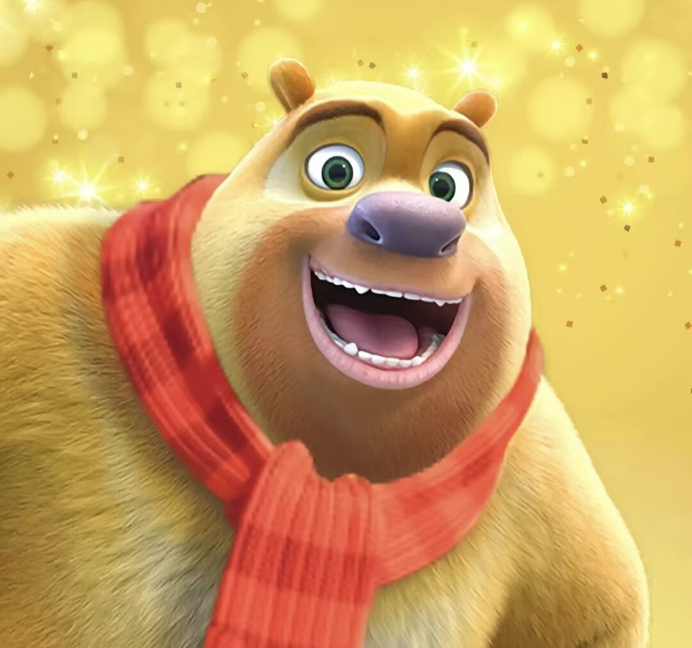

熊二是动画《熊出没》系列中的一个主要角色，由张秉君（大熊二）、张茗、殷伟、王梦拓（小熊二）配音。熊二是一只强壮且聪明的狗熊，尽管体型比哥哥熊大要胖，但力气却远超熊大，甚至能够抵挡住熊大的力量1。
熊二的性格憨厚老实，非常善良，心地柔软。他经常为光头强感到同情，例如在《熊出没之过年》中，熊二带头帮助了光头强，如果不是他，光头强可能永远回不了家1。熊二的腔调婉转，给人一种亲切的感觉。尽管他有时候显得粗鲁，但他总是展现出一种独特的可爱2。
熊二拥有接近金黄色的毛发，鼻子是深蓝色，嘴巴周围有一圈棕色。走路时驼着身子，但这种姿态使他看起来更加可爱1。
熊二在《熊出没》系列中经历了许多冒险。他和熊大一起，与伐木工人光头强展开了一系列斗智斗勇的故事，旨在保护森林免受破坏。在不同的季节背景下，如《熊出没之春日对对碰》、《熊出没之冬日乐翻天》和《熊出没之夏日连连看》，熊二和熊大继续与光头强斗智斗勇2。
在《熊出没之熊熊乐园》系列中，熊二回到了童年时期，与光头强和其他森林小动物们变成了无话不谈的发小，共同经历了许多有趣的成长故事1。 熊二还在《熊出没之探险日记》中与赵琳一起寻找虎妞，并在《熊出没之熊心归来》中为了寻找熊大而不辞辛苦，成为了一个至关重要的角色2。
熊二的力量巨大，一声熊吼就能让光头强吓得魂飞魄散。此外，他在《熊出没·变形记》中还参与了一次微观世界的冒险，展现了他在面对困难和险阻时的勇敢和智慧2。
熊二是一个深受观众喜爱的角色，以其憨厚、善良和强大的力量赢得了众多粉丝的喜爱。